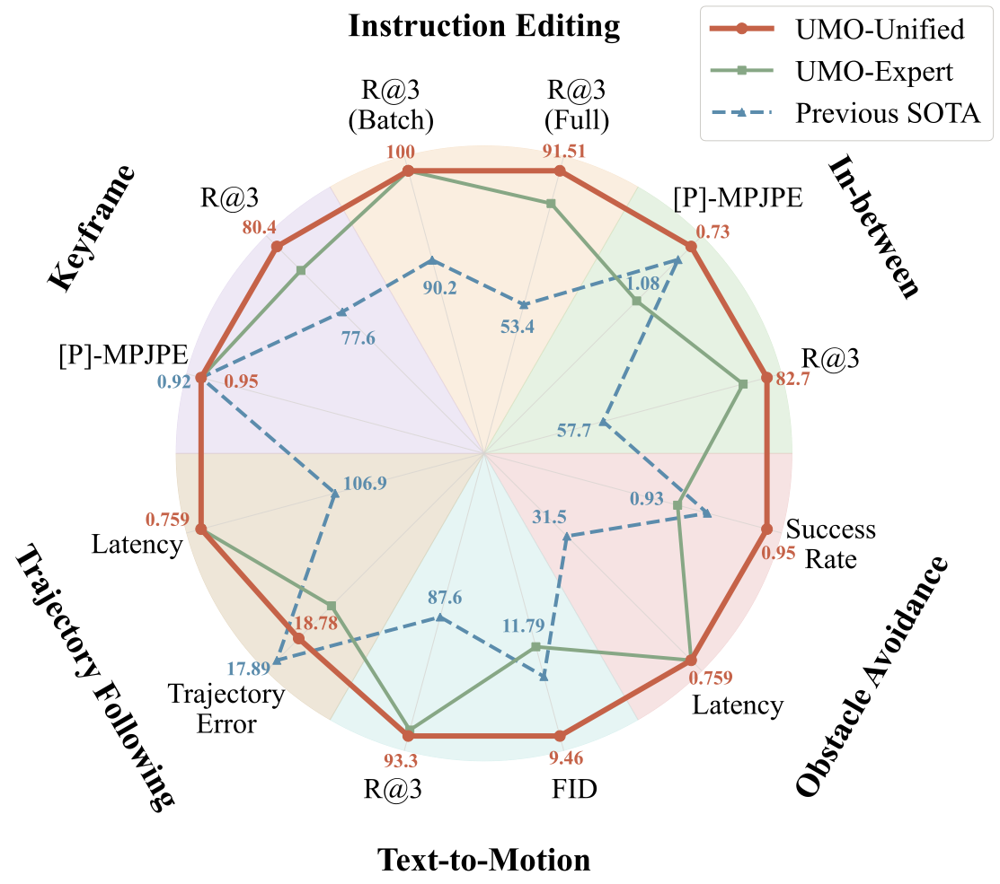

One Unified Framework · Three Meta-Operations · Diverse Motion Tasks

Generating realistic human motions from natural language descriptions.
Use arrows to browse more examples
Keyframe infilling, prediction, backcasting, and in-betweening.
Keyframe (given) Generated (ours)
Text-guided motion editing.
Use arrows to browse more examples
Follow geometric trajectories while maintaining natural motion.
{"type":"circular_arc", "start":[0.0, 0.0], "end":[2.92, 5.35], "center":[2.29, 2.22], "radius":3.19, "direction":"clockwise"}
{"type":"cubic_bezier","params":{"start":[0.0,0.0],"end":[3.54,4.15],"P0":[0.0,0.0],"P1":[-1.02,3.24],"P2":[4.55,0.92],"P3":[3.54,4.15]}}
{"type":"cubic_bezier","params":{"start":[0.0,0.0],"end":[3.98,2.03],"P0":[0.0,0.0],"P1":[0.47,2.34],"P2":[3.52,-0.31],"P3":[3.98,2.03]}}
Navigate from point A to point B while avoiding obstacles.
A person walks from (0.00, 0.00) to (3.67, 5.36). Avoiding 2 obstacles at (0.71, 1.09, r=0.25), (2.86, 4.31, r=0.35), where r is the safety radius in meters.
A person walks from (-0.00, 0.00) to (3.28, 6.41). Avoiding 3 obstacles at (0.72, 3.65, r=0.43), (1.46, 3.98, r=0.42), (0.32, 2.93, r=0.24), where r is the safety radius in meters.
Two-person interaction generation — entirely absent from single-person pretraining.
Use arrows to browse more examples
Source Generated
Comparing four conditioning architectures for in-context feature integration.
Use arrows to browse more examples
If you find this work useful, please consider citing our paper.
@misc{cong2026umounifiedincontextlearning,
title={UMO: Unified In-Context Learning Unlocks Motion Foundation Model Priors},
author={Xiaoyan Cong and Zekun Li and Zhiyang Dou and Hongyu Li and Omid Taheri and Chuan Guo and Abhay Mittal and Sizhe An and Taku Komura and Wojciech Matusik and Michael J. Black and Srinath Sridhar},
year={2026},
eprint={2603.15975},
archivePrefix={arXiv},
primaryClass={cs.CV},
url={https://arxiv.org/abs/2603.15975},
}